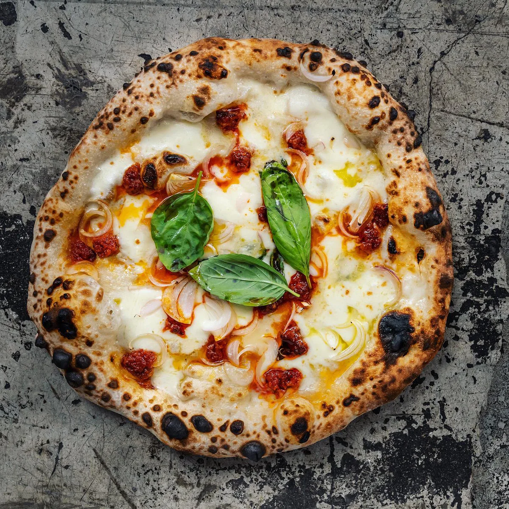

Nduja

Description
Inspired by one of the best pizza I've ever eaten.
Nduja is a spreadable, spicy salami from Calabria that's becoming increasingly more popular outside of Italy.
Ingredients
- Pizza dough
- Passata
- Nduja
- Burrata
- Mozzarella
- Parmigiano Reggiano
- Basil
Steps
- Prep your pizza tray - sprinkle your pizza tray with semolina or flour. We used a 10x15 inch shallow baking tray
- Roll out the dough - roll out your pizza dough to fit the tray you are using and place it in the tray.
- Add first toppings - spread the pizza base with the passata then top with mozzarella and Nduja
- Bake - bake the pizza for 10 minutes or until the cheese is melted and the crust is a light golden colour.
- Final toppings - Final toppings - once baked, top with dollops of burrata then sprinkle some grated parmesan over each piece of burrata cheese. Scatter over some fresh basil, cut and serve
Return to Recipes